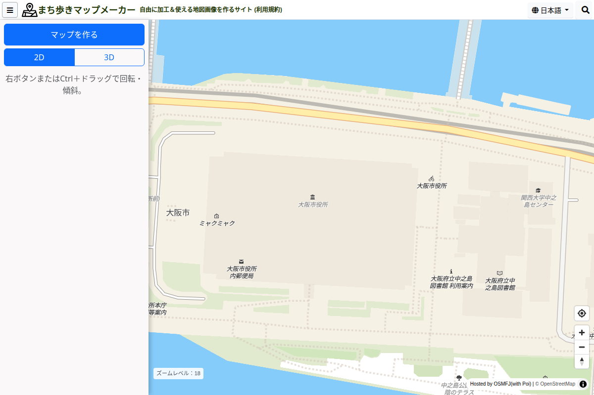
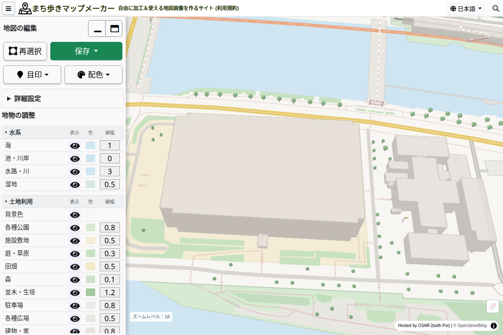
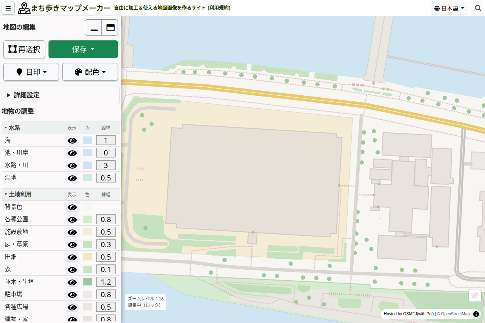
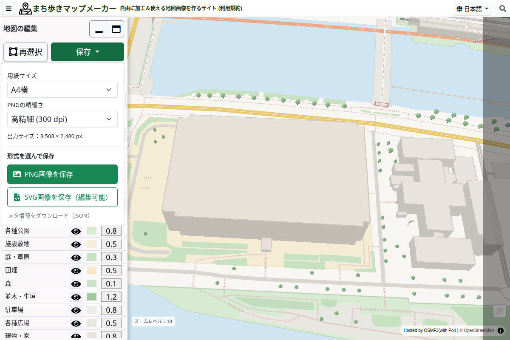
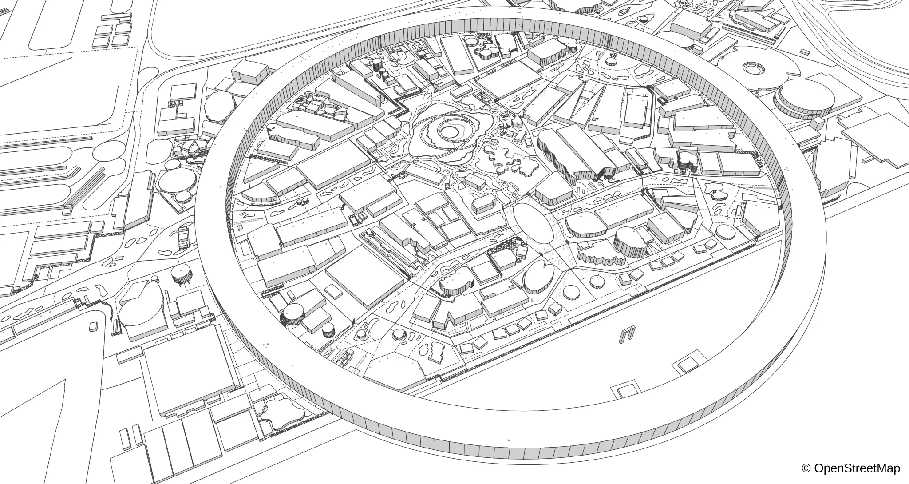

まち歩きマップメーカー / 操作ガイド
好きなデザインで、
地図を作ってみましょう。
無料で2D・3Dの地図画像を作成。場所と構図を選び、色や表示を整えて、PNG・SVGで保存します。
画面例はパソコン版です。スマートフォンでは操作ボタンが画面下に表示されます。
STEP 01
場所を探す
地図をドラッグして移動し、マウスホイールや「＋」「−」で拡大・縮小します。スマートフォンでは指で移動し、2本指の開閉で拡大・縮小できます。
右上の虫眼鏡を押し、住所を入力して検索することも出来ます。住所検索は日本国内に対応しています。見つからない場合や海外の場所を選ぶ場合は、地図を直接移動してください。


STEP 02
2D・3Dと構図を選ぶ
「2D」は真上からの地図、「3D」は傾けて見た地図です。作成前にボタンを切り替え、地図の位置と拡大率を決めます。
- パソコン：右ボタン、またはCtrlキーを押しながらドラッグすると、回転・傾斜を調整できます。
- スマートフォン：2D・3Dボタンで傾きを切り替えられます。2本指の回転で向きを調整できます。
作成後は構図が固定されます。場所・向き・傾きを変えたい場合は、必要な画像を先に保存してから「再選択」で戻ってください。
STEP 03
「マップを作る」を押す
ボタンが押せる大きさまで地図を拡大し、「マップを作る」を押します。データの取得が終わると、道路や建物の色を変えられる編集画面になります。


2Dで作った地図も、同じ編集メニューで色や表示内容を調整できます。
STEP 04
色や表示を調整する
配色をまとめて変える
「配色」からカラー・モノクロ・塗り絵のパレットを選びます。まず全体の配色を選ぶと、調整を始めやすくなります。
道路や建物を調整する
「地物の調整」の目のアイコンで表示・非表示、色の四角で色、数値欄で線幅を変更できます。
目印を加える
「目印」から施設のアイコンやピンを選びます。場所ピンには、集合場所などの文字も付けられます。
表現を変える
「詳細設定」で手書き風や季節を選べます。「3D表示」は建物などの立体表示を切り替える設定です。構図の傾きは変わりません。


STEP 05
PNG・SVGで保存する
「保存」を開き、「用紙サイズ」を選びます。「画面全体」のほか、A4・A3の縦横を選べます。表示される保存範囲を確認してから、形式を選んでください。
| 形式 | こんなときに | 押すボタン |
|---|---|---|
| PNG | 画像として文書やスライドに貼りたい | PNG画像を保存 |
| SVG | 対応するソフトで線や図形をさらに編集したい | SVG画像を保存（編集可能） |
PNGは「PNGの精細さ」も選べます。保存に時間がかかる場合は、精細さを下げるか、狭い範囲で作り直してみてください。


配布や掲載の際は、地図の出典表記を残してください。詳しくは次の「地図を利用する」をご覧ください。
STEP 06
地図を利用する
このサイトで作った地図画像は、CC BY 4.0で提供しています。出典は「© OpenStreetMap」と表記してください。ライセンスの条件に従い、印刷・加工・配布・販売など、商用も含めて利用できます。
EXPO2025の地図を作る
左上のメニューから「EXPO2025 万博の地図」を選ぶと、2025年10月13日時点の大阪・関西万博会場の地図に切り替わります。場所と2D・3Dの構図を選び、「マップを作る」を押すと、通常の地図と同じように色や表示を調整し、PNG・SVGで保存できます。
EXPO2025の地図を開く。通常の地図に戻るときは、左上のメニューで「通常の地図」を選んでください。


スマートフォンで使う
作成前の「マップを作る」と2D・3Dボタン、作成後の「再選択」「保存」は画面下部にあります。編集するときは「調整」を押して設定を開きます。
設定パネルが地図に重なる場合は、パネル上部のハンドルで大きさを変えるか、最小化して地図を確認できます。ボタンが見えない場合は、ChromeやSafariなどのブラウザーで開いてください。
活用事例
防災マップやリーフレット、案内図、地図ぬりえなど、実際の活用例をまち歩きマップメーカー事例集（note）で紹介しています。
困ったときは
「マップを作る」が押せません
地図をさらに拡大してください。もっと拡大すると、作成できる地物も増えます。
道路や建物が足りません
拡大して作り直すと表示される場合があります。表示内容はOpenStreetMapの登録状況にもよるため、実際の地物がすべて載っているとは限りません。
データの取得に失敗します
通信状態と画面のエラーメッセージを確認してください。広い範囲で失敗する場合は、拡大して範囲を狭め、再度作成してください。
場所や構図を変えて作り直したい
必要な画像を保存してから「再選択」を押し、確認画面で進みます。編集内容や追加した目印はリセットされます。
編集内容を保存して、後日このサイトで再開できますか？
PNG・SVGは地図画像の書き出しです。このサイトで編集を再開するためのプロジェクトファイルではありません。作業を終える前に、必要な画像を保存してください。
紹介サイトへの掲載
つくるログ

このバッジは、無料ツールを紹介する「つくるログ」に掲載されていることを示しています。まち歩きマップメーカーの特徴や活用例は、つくるログの紹介ページでもご覧いただけます。
ヒロメバ
アプリ・Webサイトを紹介する「ヒロメバ」にも掲載されています。ヒロメバの紹介ページでは、主な機能や利用例をご覧いただけます。